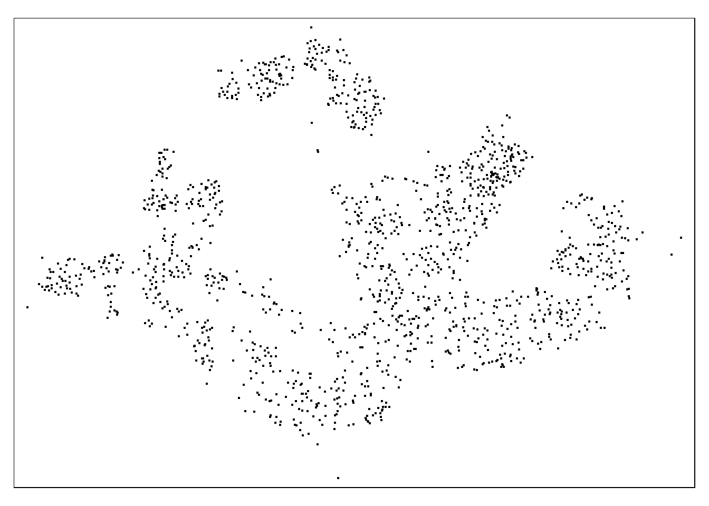

pacman::p_load(sf, spatstat, raster, maptools, tmap)03 (Part 1) ‘1st Order Spatial Point Patterns Analysis Methods’
(Copied from Exercise)
Overview:
Spatial Point Pattern Analysis is the evaluation of the pattern or distribution, of a set of points on a surface. The point can be location of:
- events such as crime, traffic accident and disease onset, or
- business services (coffee and fastfood outlets) or facilities such as childcare and eldercare.
Using appropriate functions of spatstat, this hands-on exercise aims to discover the spatial point processes of childcare centres in Singapore.
The specific questions we would like to answer are as follows:
- Are the childcare centres in Singapore randomly distributed throughout the country?
- If the answer is not, then the next logical question is where are the locations with higher concentration of childcare centres?
Data Used
To provide answers to the questions above, three data sets will be used. They are:
CHILDCARE, a point feature data providing both location and attribute information of childcare centres. It was downloaded from Data.gov.sg and is in geojson format.MP14_SUBZONE_WEB_PL, a polygon feature data providing information of URA 2014 Master Plan Planning Subzone boundary data. It is in ESRI shapefile format. This data set was also downloaded from Data.gov.sg.CostalOutline, a polygon feature data showing the national boundary of Singapore. It is provided by SLA and is in ESRI shapefile format.
Packages Used
In this hands-on exercise, five R packages will be used, they are:
sf, a relatively new R package specially designed to import, manage and process vector-based geospatial data in R.
spatstat, which has a wide range of useful functions for point pattern analysis. In this hands-on exercise, it will be used to perform 1st- and 2nd-order spatial point patterns analysis and derive kernel density estimation (KDE) layer.
raster which reads, writes, manipulates, analyses and model of gridded spatial data (i.e. raster). In this hands-on exercise, it will be used to convert image output generate by spatstat into raster format.
maptools which provides a set of tools for manipulating geographic data. In this hands-on exercise, we mainly use it to convert Spatial objects into ppp format of spatstat.
tmap which provides functions for plotting cartographic quality static point patterns maps or interactive maps by using leaflet API.
The above is a copy from the exercise overview from workbook
1 Import Packages
2 Import Data
# childcare services data
childcare_sf <- st_read(dsn="data/geospatial/child-care-services-geojson.geojson")
# coastal outline data
sg_sf <- st_read(dsn="data/geospatial", layer="CostalOutline")
# masterplan subzone data
mpsz_sf <- st_read(dsn="data/geospatial", layer = "MP14_SUBZONE_WEB_PL")
# notice childcare_sf is in WGS84, transform it into SV21:
childcare_sf <- childcare_sf %>% st_transform(crs=3414)Checking Attribute Information
* Notice how the attributes of childcare_sf is nested within html syntax. We will not be parsing it this time, but for future references:
- In order to read the attributes, we need to first isolate the ‘Description’ attribute, and read line by line using each <tr>.
- Within each line, identify <th> and <td>. The attribute name is located within a pair of <th>, and value is located within a pair of <td>.
Check CRS are all consistent– All EPSG:3414
#| output: false
# st_geometry(sg_sf)
# st_geometry(mpsz_sf)
# st_geometry(childcare_sf)
st_crs(sg_sf)Coordinate Reference System:
User input: SVY21
wkt:
PROJCRS["SVY21",
BASEGEOGCRS["SVY21[WGS84]",
DATUM["World Geodetic System 1984",
ELLIPSOID["WGS 84",6378137,298.257223563,
LENGTHUNIT["metre",1]],
ID["EPSG",6326]],
PRIMEM["Greenwich",0,
ANGLEUNIT["Degree",0.0174532925199433]]],
CONVERSION["unnamed",
METHOD["Transverse Mercator",
ID["EPSG",9807]],
PARAMETER["Latitude of natural origin",1.36666666666667,
ANGLEUNIT["Degree",0.0174532925199433],
ID["EPSG",8801]],
PARAMETER["Longitude of natural origin",103.833333333333,
ANGLEUNIT["Degree",0.0174532925199433],
ID["EPSG",8802]],
PARAMETER["Scale factor at natural origin",1,
SCALEUNIT["unity",1],
ID["EPSG",8805]],
PARAMETER["False easting",28001.642,
LENGTHUNIT["metre",1],
ID["EPSG",8806]],
PARAMETER["False northing",38744.572,
LENGTHUNIT["metre",1],
ID["EPSG",8807]]],
CS[Cartesian,2],
AXIS["(E)",east,
ORDER[1],
LENGTHUNIT["metre",1,
ID["EPSG",9001]]],
AXIS["(N)",north,
ORDER[2],
LENGTHUNIT["metre",1,
ID["EPSG",9001]]]]st_crs(mpsz_sf)Coordinate Reference System:
User input: SVY21
wkt:
PROJCRS["SVY21",
BASEGEOGCRS["SVY21[WGS84]",
DATUM["World Geodetic System 1984",
ELLIPSOID["WGS 84",6378137,298.257223563,
LENGTHUNIT["metre",1]],
ID["EPSG",6326]],
PRIMEM["Greenwich",0,
ANGLEUNIT["Degree",0.0174532925199433]]],
CONVERSION["unnamed",
METHOD["Transverse Mercator",
ID["EPSG",9807]],
PARAMETER["Latitude of natural origin",1.36666666666667,
ANGLEUNIT["Degree",0.0174532925199433],
ID["EPSG",8801]],
PARAMETER["Longitude of natural origin",103.833333333333,
ANGLEUNIT["Degree",0.0174532925199433],
ID["EPSG",8802]],
PARAMETER["Scale factor at natural origin",1,
SCALEUNIT["unity",1],
ID["EPSG",8805]],
PARAMETER["False easting",28001.642,
LENGTHUNIT["metre",1],
ID["EPSG",8806]],
PARAMETER["False northing",38744.572,
LENGTHUNIT["metre",1],
ID["EPSG",8807]]],
CS[Cartesian,2],
AXIS["(E)",east,
ORDER[1],
LENGTHUNIT["metre",1,
ID["EPSG",9001]]],
AXIS["(N)",north,
ORDER[2],
LENGTHUNIT["metre",1,
ID["EPSG",9001]]]]st_crs(childcare_sf)Coordinate Reference System:
User input: EPSG:3414
wkt:
PROJCRS["SVY21 / Singapore TM",
BASEGEOGCRS["SVY21",
DATUM["SVY21",
ELLIPSOID["WGS 84",6378137,298.257223563,
LENGTHUNIT["metre",1]]],
PRIMEM["Greenwich",0,
ANGLEUNIT["degree",0.0174532925199433]],
ID["EPSG",4757]],
CONVERSION["Singapore Transverse Mercator",
METHOD["Transverse Mercator",
ID["EPSG",9807]],
PARAMETER["Latitude of natural origin",1.36666666666667,
ANGLEUNIT["degree",0.0174532925199433],
ID["EPSG",8801]],
PARAMETER["Longitude of natural origin",103.833333333333,
ANGLEUNIT["degree",0.0174532925199433],
ID["EPSG",8802]],
PARAMETER["Scale factor at natural origin",1,
SCALEUNIT["unity",1],
ID["EPSG",8805]],
PARAMETER["False easting",28001.642,
LENGTHUNIT["metre",1],
ID["EPSG",8806]],
PARAMETER["False northing",38744.572,
LENGTHUNIT["metre",1],
ID["EPSG",8807]]],
CS[Cartesian,2],
AXIS["northing (N)",north,
ORDER[1],
LENGTHUNIT["metre",1]],
AXIS["easting (E)",east,
ORDER[2],
LENGTHUNIT["metre",1]],
USAGE[
SCOPE["Cadastre, engineering survey, topographic mapping."],
AREA["Singapore - onshore and offshore."],
BBOX[1.13,103.59,1.47,104.07]],
ID["EPSG",3414]]Note: even though sg_sf and mpsz_sf is using SVY21, and have its coordinates in meters, they do not actually record itself as EPSG:3414, instead the CRS information shows EPSG:9001. In order to ensure consistency and a clean data, let us set the CRS to 3414.
# change CRS to EPSG:3414
st_set_crs(sg_sf,3414)Simple feature collection with 60 features and 4 fields
Geometry type: POLYGON
Dimension: XY
Bounding box: xmin: 2663.926 ymin: 16357.98 xmax: 56047.79 ymax: 50244.03
Projected CRS: SVY21 / Singapore TM
First 10 features:
GDO_GID MSLINK MAPID COSTAL_NAM geometry
1 1 1 0 Linkway POLYGON ((14362.86 32307.49...
2 2 3 0 SENTOSA POLYGON ((25683.97 26236.91...
3 3 5 0 PULAU SARIMBUN POLYGON ((11471.97 46273.01...
4 4 6 0 PULAU SAMULUN POLYGON ((12602.3 32061.35,...
5 5 7 0 SINGAPORE - MAIN ISLAND POLYGON ((17915.53 46770.73...
6 6 8 0 PULAU KEPPEL POLYGON ((25606.84 27481.21...
7 7 9 0 PULAU BRANI POLYGON ((27778.17 27321.28...
8 8 10 0 ISLET POLYGON ((25874.11 26121.48...
9 9 11 0 PULAU PALAWAN POLYGON ((25937.33 25797.66...
10 10 12 0 ISLET POLYGON ((27459.33 24854.08...st_set_crs(mpsz_sf,3414)Simple feature collection with 323 features and 15 fields
Geometry type: MULTIPOLYGON
Dimension: XY
Bounding box: xmin: 2667.538 ymin: 15748.72 xmax: 56396.44 ymax: 50256.33
Projected CRS: SVY21 / Singapore TM
First 10 features:
OBJECTID SUBZONE_NO SUBZONE_N SUBZONE_C CA_IND PLN_AREA_N
1 1 1 MARINA SOUTH MSSZ01 Y MARINA SOUTH
2 2 1 PEARL'S HILL OTSZ01 Y OUTRAM
3 3 3 BOAT QUAY SRSZ03 Y SINGAPORE RIVER
4 4 8 HENDERSON HILL BMSZ08 N BUKIT MERAH
5 5 3 REDHILL BMSZ03 N BUKIT MERAH
6 6 7 ALEXANDRA HILL BMSZ07 N BUKIT MERAH
7 7 9 BUKIT HO SWEE BMSZ09 N BUKIT MERAH
8 8 2 CLARKE QUAY SRSZ02 Y SINGAPORE RIVER
9 9 13 PASIR PANJANG 1 QTSZ13 N QUEENSTOWN
10 10 7 QUEENSWAY QTSZ07 N QUEENSTOWN
PLN_AREA_C REGION_N REGION_C INC_CRC FMEL_UPD_D X_ADDR
1 MS CENTRAL REGION CR 5ED7EB253F99252E 2014-12-05 31595.84
2 OT CENTRAL REGION CR 8C7149B9EB32EEFC 2014-12-05 28679.06
3 SR CENTRAL REGION CR C35FEFF02B13E0E5 2014-12-05 29654.96
4 BM CENTRAL REGION CR 3775D82C5DDBEFBD 2014-12-05 26782.83
5 BM CENTRAL REGION CR 85D9ABEF0A40678F 2014-12-05 26201.96
6 BM CENTRAL REGION CR 9D286521EF5E3B59 2014-12-05 25358.82
7 BM CENTRAL REGION CR 7839A8577144EFE2 2014-12-05 27680.06
8 SR CENTRAL REGION CR 48661DC0FBA09F7A 2014-12-05 29253.21
9 QT CENTRAL REGION CR 1F721290C421BFAB 2014-12-05 22077.34
10 QT CENTRAL REGION CR 3580D2AFFBEE914C 2014-12-05 24168.31
Y_ADDR SHAPE_Leng SHAPE_Area geometry
1 29220.19 5267.381 1630379.3 MULTIPOLYGON (((31495.56 30...
2 29782.05 3506.107 559816.2 MULTIPOLYGON (((29092.28 30...
3 29974.66 1740.926 160807.5 MULTIPOLYGON (((29932.33 29...
4 29933.77 3313.625 595428.9 MULTIPOLYGON (((27131.28 30...
5 30005.70 2825.594 387429.4 MULTIPOLYGON (((26451.03 30...
6 29991.38 4428.913 1030378.8 MULTIPOLYGON (((25899.7 297...
7 30230.86 3275.312 551732.0 MULTIPOLYGON (((27746.95 30...
8 30222.86 2208.619 290184.7 MULTIPOLYGON (((29351.26 29...
9 29893.78 6571.323 1084792.3 MULTIPOLYGON (((20996.49 30...
10 30104.18 3454.239 631644.3 MULTIPOLYGON (((24472.11 29...Quick View of Data
tmap_mode("plot")
qtm(sg_sf) +
qtm(mpsz_sf) +
qtm(childcare_sf)
Quick Interactive Plot of Data
We can also use tmap ‘view’ mode to plot our data layer on an interactive map, which uses Leaflet for R, where Leaflet is an open-source JavaScript library for interactive maps. In this mode, we can drag and zoom around and click on the features of our data layer to query its attribute information.
tmap_mode('plot')
tm_shape(childcare_sf)+
tm_dots()
# reset back to 'plot' mode
tmap_mode('plot')Note from Instructor:
Reminder: Always remember to switch back to plot mode after the interactive map. This is because, each interactive mode will consume a connection. You should also avoid displaying ecessive numbers of interactive maps (i.e. not more than 10) in one RMarkdown document when publish on Netlify.3 Geospatial Data Wrangling
Convert sf DataFrame to sp’s Spatial* class (and Spatial*DataFrame).
“Many geospatial analysis packages require the input geospatial data in sp’s Spatial*classes.”
# The code chunk below uses as_Spatial() of sf package to convert the three geospatial data from simple feature data frame to sp’s Spatial* class.
# childcare <- as_Spatial(from=childcare_sf)
# mpsz <- as_Spatial(from=mpsz_sf)
# sg <- as_Spatial(from=sg_sf)
# also see different method
childcare <- as(childcare_sf,"Spatial")
mpsz <- as(mpsz_sf,"Spatial")
sg <- as(sg_sf,"Spatial")Showing the output information
childcareclass : SpatialPointsDataFrame
features : 1545
extent : 11203.01, 45404.24, 25667.6, 49300.88 (xmin, xmax, ymin, ymax)
crs : +proj=tmerc +lat_0=1.36666666666667 +lon_0=103.833333333333 +k=1 +x_0=28001.642 +y_0=38744.572 +ellps=WGS84 +towgs84=0,0,0,0,0,0,0 +units=m +no_defs
variables : 2
names : Name, Description
min values : kml_1, <center><table><tr><th colspan='2' align='center'><em>Attributes</em></th></tr><tr bgcolor="#E3E3F3"> <th>ADDRESSBLOCKHOUSENUMBER</th> <td></td> </tr><tr bgcolor=""> <th>ADDRESSBUILDINGNAME</th> <td></td> </tr><tr bgcolor="#E3E3F3"> <th>ADDRESSPOSTALCODE</th> <td>018989</td> </tr><tr bgcolor=""> <th>ADDRESSSTREETNAME</th> <td>1, MARINA BOULEVARD, #B1 - 01, ONE MARINA BOULEVARD, SINGAPORE 018989</td> </tr><tr bgcolor="#E3E3F3"> <th>ADDRESSTYPE</th> <td></td> </tr><tr bgcolor=""> <th>DESCRIPTION</th> <td></td> </tr><tr bgcolor="#E3E3F3"> <th>HYPERLINK</th> <td></td> </tr><tr bgcolor=""> <th>LANDXADDRESSPOINT</th> <td>0</td> </tr><tr bgcolor="#E3E3F3"> <th>LANDYADDRESSPOINT</th> <td>0</td> </tr><tr bgcolor=""> <th>NAME</th> <td>THE LITTLE SKOOL-HOUSE INTERNATIONAL PTE. LTD.</td> </tr><tr bgcolor="#E3E3F3"> <th>PHOTOURL</th> <td></td> </tr><tr bgcolor=""> <th>ADDRESSFLOORNUMBER</th> <td></td> </tr><tr bgcolor="#E3E3F3"> <th>INC_CRC</th> <td>08F73931F4A691F4</td> </tr><tr bgcolor=""> <th>FMEL_UPD_D</th> <td>20200826094036</td> </tr><tr bgcolor="#E3E3F3"> <th>ADDRESSUNITNUMBER</th> <td></td> </tr></table></center>
max values : kml_999, <center><table><tr><th colspan='2' align='center'><em>Attributes</em></th></tr><tr bgcolor="#E3E3F3"> <th>ADDRESSBLOCKHOUSENUMBER</th> <td></td> </tr><tr bgcolor=""> <th>ADDRESSBUILDINGNAME</th> <td></td> </tr><tr bgcolor="#E3E3F3"> <th>ADDRESSPOSTALCODE</th> <td>829646</td> </tr><tr bgcolor=""> <th>ADDRESSSTREETNAME</th> <td>200, PONGGOL SEVENTEENTH AVENUE, SINGAPORE 829646</td> </tr><tr bgcolor="#E3E3F3"> <th>ADDRESSTYPE</th> <td></td> </tr><tr bgcolor=""> <th>DESCRIPTION</th> <td>Child Care Services</td> </tr><tr bgcolor="#E3E3F3"> <th>HYPERLINK</th> <td></td> </tr><tr bgcolor=""> <th>LANDXADDRESSPOINT</th> <td>0</td> </tr><tr bgcolor="#E3E3F3"> <th>LANDYADDRESSPOINT</th> <td>0</td> </tr><tr bgcolor=""> <th>NAME</th> <td>RAFFLES KIDZ @ PUNGGOL PTE LTD</td> </tr><tr bgcolor="#E3E3F3"> <th>PHOTOURL</th> <td></td> </tr><tr bgcolor=""> <th>ADDRESSFLOORNUMBER</th> <td></td> </tr><tr bgcolor="#E3E3F3"> <th>INC_CRC</th> <td>379D017BF244B0FA</td> </tr><tr bgcolor=""> <th>FMEL_UPD_D</th> <td>20200826094036</td> </tr><tr bgcolor="#E3E3F3"> <th>ADDRESSUNITNUMBER</th> <td></td> </tr></table></center> mpszclass : SpatialPolygonsDataFrame
features : 323
extent : 2667.538, 56396.44, 15748.72, 50256.33 (xmin, xmax, ymin, ymax)
crs : +proj=tmerc +lat_0=1.36666666666667 +lon_0=103.833333333333 +k=1 +x_0=28001.642 +y_0=38744.572 +datum=WGS84 +units=m +no_defs
variables : 15
names : OBJECTID, SUBZONE_NO, SUBZONE_N, SUBZONE_C, CA_IND, PLN_AREA_N, PLN_AREA_C, REGION_N, REGION_C, INC_CRC, FMEL_UPD_D, X_ADDR, Y_ADDR, SHAPE_Leng, SHAPE_Area
min values : 1, 1, ADMIRALTY, AMSZ01, N, ANG MO KIO, AM, CENTRAL REGION, CR, 00F5E30B5C9B7AD8, 16409, 5092.8949, 19579.069, 871.554887798, 39437.9352703
max values : 323, 17, YUNNAN, YSSZ09, Y, YISHUN, YS, WEST REGION, WR, FFCCF172717C2EAF, 16409, 50424.7923, 49552.7904, 68083.9364708, 69748298.792 sgclass : SpatialPolygonsDataFrame
features : 60
extent : 2663.926, 56047.79, 16357.98, 50244.03 (xmin, xmax, ymin, ymax)
crs : +proj=tmerc +lat_0=1.36666666666667 +lon_0=103.833333333333 +k=1 +x_0=28001.642 +y_0=38744.572 +datum=WGS84 +units=m +no_defs
variables : 4
names : GDO_GID, MSLINK, MAPID, COSTAL_NAM
min values : 1, 1, 0, ISLAND LINK
max values : 60, 67, 0, SINGAPORE - MAIN ISLAND Converting the Spatial* class into generic sp format
“spatstat requires the analytical data in ppp object form. There is no direct way to convert a Spatial* classes into ppp object. We need to convert the Spatial classes* into a Spatial(sp) object first.”
childcare_sp <- as(childcare, "SpatialPoints")
sg_sp <- as(sg, "SpatialPolygons")Showing the output information
childcare_spclass : SpatialPoints
features : 1545
extent : 11203.01, 45404.24, 25667.6, 49300.88 (xmin, xmax, ymin, ymax)
crs : +proj=tmerc +lat_0=1.36666666666667 +lon_0=103.833333333333 +k=1 +x_0=28001.642 +y_0=38744.572 +ellps=WGS84 +towgs84=0,0,0,0,0,0,0 +units=m +no_defs At a glance, we can see that by converting Spatial*DataFrame to SpatialPoints or SpatialPolygons, we have lost all attribute information except the geometry features.
Converting the generic sp format into spatstat’s ppp format
Now, we will use as.ppp() function of spatstat to convert the spatial data into spatstat’s ppp object format
# childcare_ppp <- as.ppp(childcare_sp, W=NULL)
# childcare_ppp <- as.ppp(st_coordinates(childcare_sf), st_bbox(childcare_sf))
# childcare_pppTO BE COMPLETED